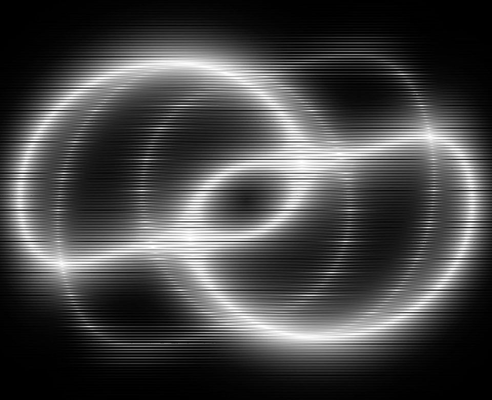

01 / 05Milano. Since 2023.
Installations and performances where image and sound merge.
light · sound · space · time
Founded in 2023, TEMPO is a multidisciplinary art collective involved in the creation of audiovisual installations and performances, merging the realms of image and sound to produce enhanced, cutting-edge and unique experiences.
TEMPO stands as a collective force, inspired by the common goal of exploring innovative connections between light, sound, space and time. As architects of experiences, audiovisual sculptors and creative engineers our work lies on the values of experimentation, shared knowledge and collective thinking, leveraging creativity and technology.
WorksScroll or swipe to dive into each work. Sound rises as you go deeper.